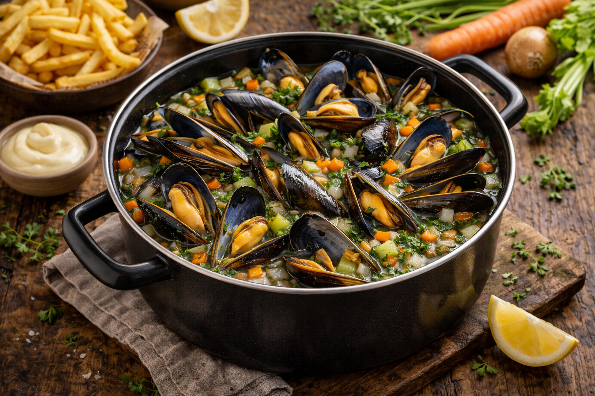

Spécialité belge incontournable venue de la mer du Nord, conviviale et savoureuse.
============================== PRÉPARATION ============================== 1. Dissoudre le cube de bouillon dans un verre d’eau chaude ou tiède. 2. Émincer l’oignon, la carotte, le céleri et le poireau. 3. Hacher l’ail. 4. Chauffer l’huile dans la casserole. 5. Faire revenir les légumes 5 minutes. 6. Ajouter le bouillon préparé et mélanger. 7. Ajouter les moules. 8. Mélanger une seule fois pour répartir les légumes. 9. Couvrir immédiatement. 10. Cuire 8 à 10 minutes sans remuer. 11. Secouer légèrement la casserole en fin de cuisson si nécessaire. 12. Vérifier que les moules sont ouvertes. 13. Assaisonner. 14. Servir avec le jus de cuisson. 15. Servir les frites séparément. ============================== INFORMATIONS ET CONSEILS ============================== Les moules sont un plat typiquement belge provenant de la côte de la mer du Nord. Ce petit crustacé vit en groupe, souvent accroché en grappes. Dans la nature, on ne voit que sa coquille fermée. C’est uniquement lors de la cuisson qu’elle s’ouvre et régale petits et grands. Bien sûr, que serait un plat belge sans frites ? 😊 La base classique est céleri, oignon et ail. J’aime ajouter carotte et poireau. Depuis quelque temps, sur conseil d’un ami, j’ajoute un cube de bouillon de légumes : le goût est encore plus riche. Le bouillon restant est délicieux : je trempe mes frites dedans et je termine comme une soupe. Pour manger facilement, utilisez une coquille vide comme pince. Prévoyez un grand bol pour les coquilles vides. ⚠️ Si une moule reste fermée après cuisson, jetez-la.